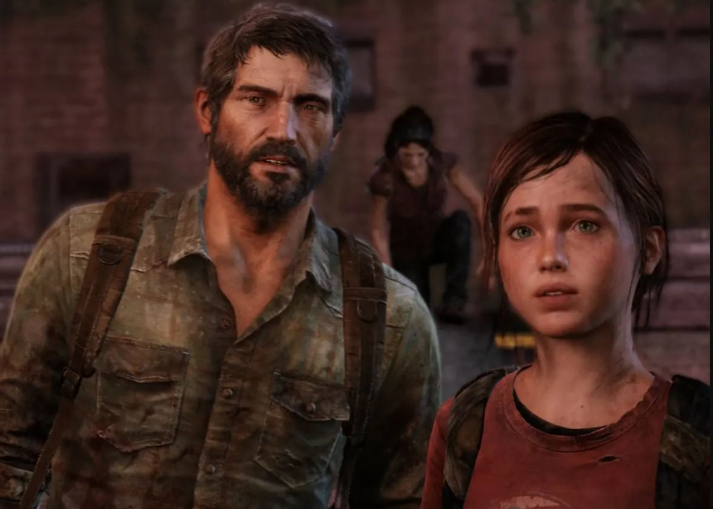
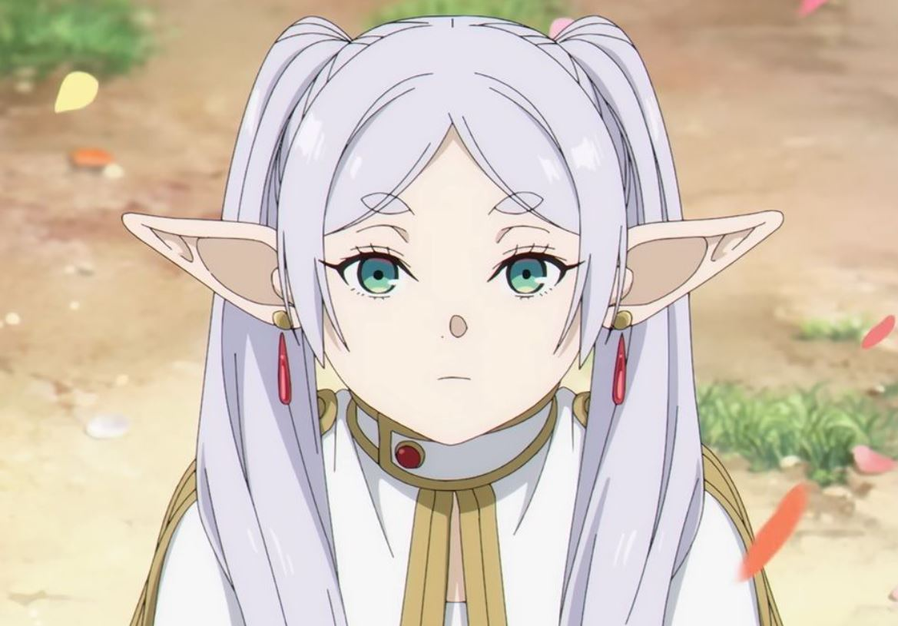
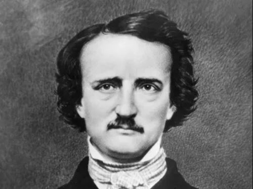
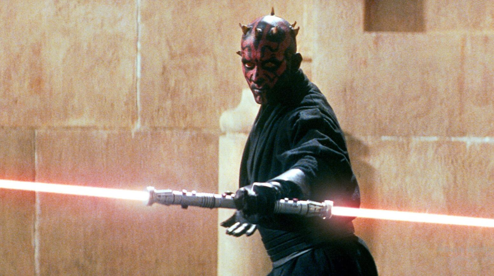
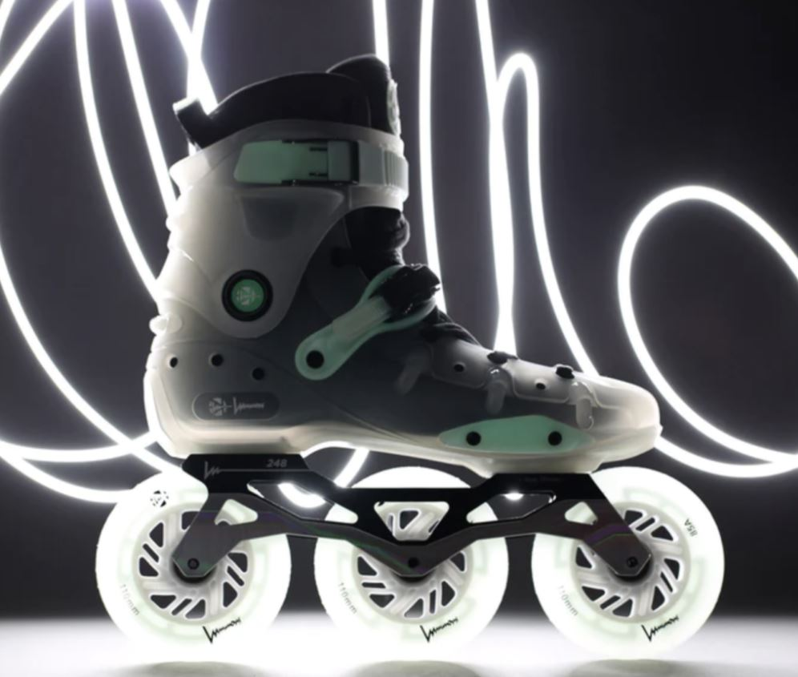

Here are a few things that I like
- Video Games
- This is one of my favourites hobbies, I prefer games with a great story, like The last of us, Alice Madness Return or puzzle games, I like also party games like Crash Team Racing, I'm really bad at fighting games or sports 
- Anime
- I love anime, but I don't like shonen, I tend to watch more mature content like seinen, or short animes with a story my favourite anime is Full Metal Alchemist Brotherhood, Made in Abyss, Attack on Titans, the first season of The Promised Neverland, Death Note currently I'm watching Frieren: Beyond Journey's End 
- Literature
- I grew up reading books, I love to dive deep into a good story, my favorite book is 2001: A Space Odyssey, Allan Poe Tales, H.P. stories by lovecraft, I Robot by Isaac Asimov or the fabulous Brave New World by Aldous Huxley 
- Exercise
- What can I say about exercise, I love lift weighting, I'm learning how to hand stand, some steps of shuffle dance, even lightsaber choreography 
- Roller Skating
- I like the freedom that skating offers you, that feeling of mastering something step by step is awesome 
- Technology
- Since I was a child, I always spend time asking me, how things work? I study Mechatronics, and now here I'm trying to understand Artificial Intelligence